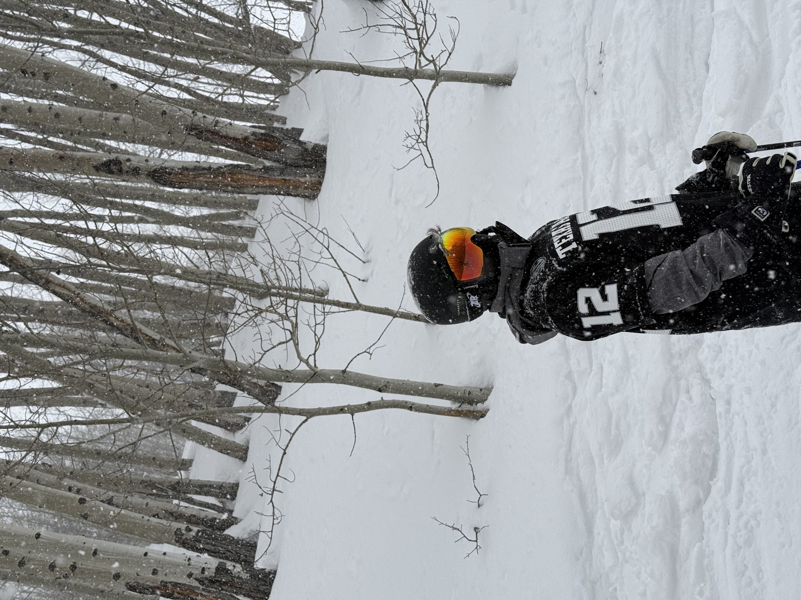

Wesley Schiegg
Undergraduate Computer Science Major at Texas A&M University
About me
I am a junior at Texas A&M University studying Computer Science. I was born and raised in the Dallas/Fort Worth area where I attended Marcus High School. The reason I chose Computer Science as my major is because I love coding and see myself as a natural programmer. Outside of school, I enjoy skiing, cooking, traveling, and trying new things.
